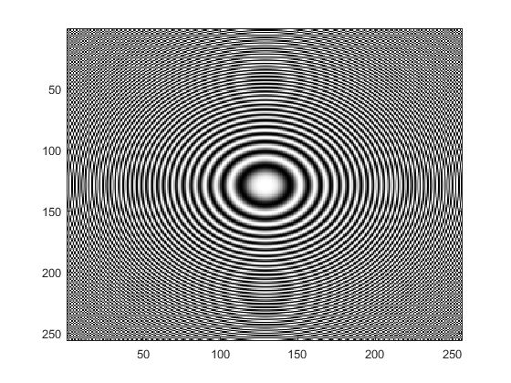

I am a computer scientist pursuing a Bachelor’s degree at Korea National University of Transportation. My research focuses on the intersection of image processing and information security, with recent work expanding from drone and radar studies to image dehazing sensor development.
Machine learning / Digital signal and video processing / information security / Embedded system design
- 1. Minho Seo — Conference paper, 2025. PDF
Existing Method A uses a Homogeneous Fog Model that overlays fog of uniform density across the entire screen. This approach is like simply placing a transparent gray layer over an image, failing to reproduce the physical scattering phenomenon according to the distance between the observer and objects.

Blind image restoration
Image Dehazing Techniques for Enhanced Visual Perception and Sensor Applications
 BMP Image AI
BMP Image AI
Image processing on the bmp.
OVERFLOW Student Club President (2025) • Undergraduate Research Assistant in Dat Ngo’s Lab (2025) •
Signals and Systems (2025)